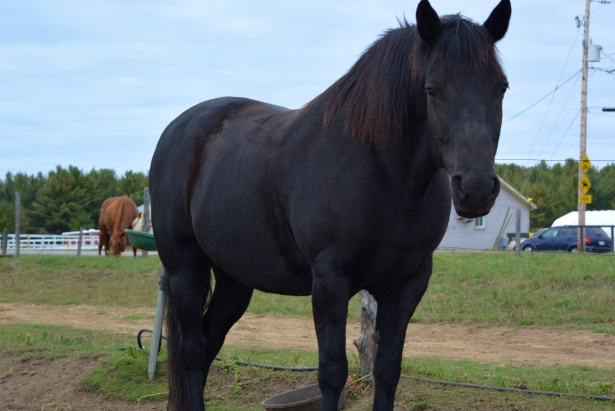

The Golden Retriever is a sturdy, muscular dog of medium size, famous for the dense, lustrous coat of gold that gives the breed its name. The broad head, with its friendly and intelligent eyes, short ears, and straight muzzle, is a breed hallmark.

Use of a mark in bootstrap
Use Ctrl + p to open the Print dialog box.
The Maine Coon is a large, muscular, and long-haired cat breed that originated in the U.S. state of Maine, where it is the official state cat.
The Golden Retriever is a sturdy, muscular dog of medium size, famous for the dense, lustrous coat of gold that gives the breed its name. The broad head, with its friendly and intelligent eyes, short ears, and straight muzzle, is a breed hallmark.
The national horse of Canada is a beautiful breed that dates back over 350 years from when King Louis XIV of France sent a shipload of horses over to his subjects in New France in 1665.
Kakapos can't fly. They use their short wings for balance and support rather than flapping. Their feathers are much softer than those of other birds because they do not need to be strong and stiff enough to support flight.
Column right
Behavorist
Professors are employed by higher education institutions and divide their time between research, teaching, and academic services. As professors gain experience, they will devote more time to research and offer fewer lectures to students. Professors typically fill supervisory roles, attend conferences, publish articles, and assist colleagues.
Dentistry
Professors are employed by higher education institutions and divide their time between research, teaching, and academic services. As professors gain experience, they will devote more time to research and offer fewer lectures to students. Professors typically fill supervisory roles, attend conferences, publish articles, and assist colleagues.
About me My Pets Client FeedbackNutritionist
Professors are employed by higher education institutions and divide their time between research, teaching, and academic services. As professors gain experience, they will devote more time to research and offer fewer lectures to students. Professors typically fill supervisory roles, attend conferences, publish articles, and assist colleagues.
Nutritionist
Professors are employed by higher education institutions and divide their time between research, teaching, and academic services. As professors gain experience, they will devote more time to research and offer fewer lectures to students. Professors typically fill supervisory roles, attend conferences, publish articles, and assist colleagues.